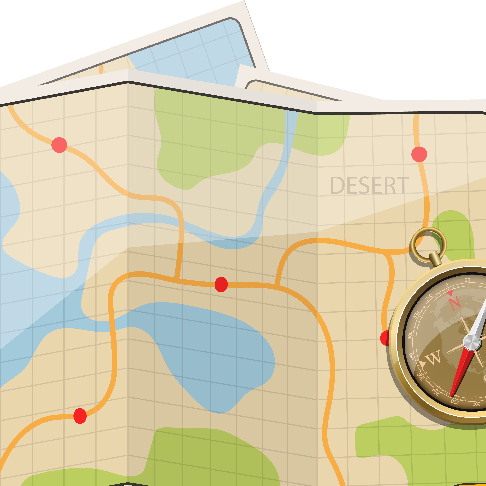

Home
Nikah
Akta Ikrar Wakaf
SKT Masjid
SKT Musholla
SKT Majelis Taklim
Sertifikasi Halal
Haji & Umroh
Social Media
KANTOR URUSAN AGAMA
KECAMATAN WONOASRI, KABUPATEN MADIUN
Pelayanan Pendaftaran Wakaf secara Online & Offline
Kantor Urusan Agama Kecamatan Wonoasri, Kab. Madiun
Syarat Wakaf
1.
Wakif
(Yang mewakafkan tanah)
2.
Nadzir
(Penerima wakaf)

3.
Tanah
(Dokumen bukti kepemilikan)
4.
Saksi
(2 orang saksi)
5.
Pelapor
(Jika melaporkan wakaf masa lalu)
6.
Cek List
Syarat Wakaf
Format Surat
Nadzir Organisasi / Yayasan
Format Surat
Nadzir Perorangan / Takmir
Tanya Admin Wakaf